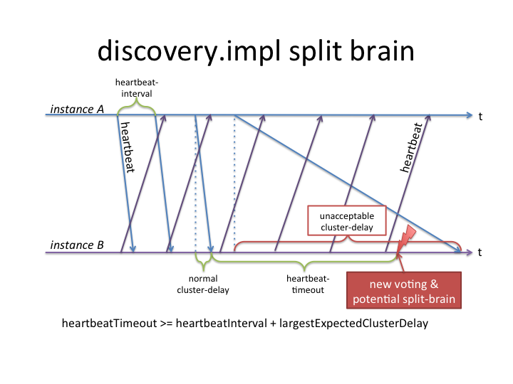

Discovery API and its implementations
In many situations a particular Sling-based deployment consists of several Sling instances: typically a number of instances would form a cluster that share a common content repository - in other situations, or additionally, instances might be loosely coupled, each with their own repository.
The discovery-api bundle introduces an abstraction for such scenarios called topology. It provides access to the current topology, allows to be informed of any changes in the topology (such as joining or leaving instances) and contains a simple property exchange mechanism, e.g. to allow building communication services on top of it.
Discovery Entities
The Discovery API defines the following entities
Instance, InstanceDescription
A Sling instance running in one VM is represented in the discovery API by an InstanceDescription:
- it represents one Sling instance
- it has thus a unique Sling ID
- it has a flag that marks if it is leader in a cluster (more details below)
- plus it has properties (which can be provided via
PropertyProviders)
Cluster, ClusterView
Multiple instances that are connected to the same underlying repository are commonly referred to as a 'Cluster'. The reasoning behind this terminology being that they access the same data and can thus deliver or modify the same data.
In the discovery API this cluster concept is represented via a ClusterView object. A 'view' because it is a momentary snapshot of the cluster and only contains instances that are currently alive. It's features are:
- each cluster has a stable leader. Stable meaning it won't change unless that leader crashes.
- it has an ordered, stable list of instances that are part of it, thus currently alive. the relative order of instances in this list is stable, meaning that it only stays or moves up one position if an instance listed 'above' crashes - a newly started instance will always be added at the end of this list.
- plus it has a unique id that is persistent across restarts
Topology, TopologyView
The topology - or more precisely the TopologyView - represents a snapshot (view) of a number of loosely coupled Sling instances (InstanceDescription) and clusters (ClusterView) of a particular deployment. A cluster can consist of one or more instances. Each instance is always part of a cluster (even if the cluster consists of only one instance). The features are:
- only one: it has a list of clusters
There are no further assumption made on the structure of a topology.
If different clusters in the topology should represent different 'types of clusters' (eg a publish or an author cluster), then that is not explicitly handled by the discovery API. Instead, applications can define properties on each instance that model such cluster types or other aspects.
Cluster Leader and Instance Ordering
As mentioned the discovery API introduces support for a cluster leader: within each cluster, the API guarantees that one and only one instance is leader at any time. That leader is guaranteed to be stable, ie as long as it stays alive and is visible by other instances of the same cluster, it will stay leader. As soon as it leaves the cluster (or the corresponding implementation bundle is deactivated), another instance in that cluster is elected leader. The leader can be used to deal with work that must be guaranteed to only execute on one (but any) instance in the cluster.
Additionally each cluster (ClusterView) orders its instances in a stable list: each newly joined instances is added at the end of the list and retains its order in the list as long as it doesn't leave the cluster. This can be used to distribute "singleton" work amongst the cluster to more than just the leader.
Topology Changes
The DiscoveryService provides access to the currently valid TopologyView. Additionally, applications can register a TopologyEventListener and thus be informed about any changes in the topology. Whenever the discovery service detects that an instance is no longer responding or has newly joined, or a new leader has been elected, it sends a TOPOLOGY_CHANGING event, starts settling the change within the topology (i.e. making sure everybody else in the topology agrees with the change) and finally sends a TOPOLOGY_CHANGED event with the new topology.
Additionally, when "only" properties have changed, a PROPERTIES_CHANGED event is sent.
Note that the detection of topology (or properties) changes will incur a delay which is implementation dependent.
The following is an example of a listener. Note that the binding is done automatically by OSGi, as soon as a TopologyEventListener is registered.
import org.apache.felix.scr.annotations.Component;
import org.apache.felix.scr.annotations.Service;
import org.apache.sling.discovery.TopologyEvent;
import org.apache.sling.discovery.TopologyEventListener;
@Component
@Service(value = { TopologyEventListener.class })
public class MyTopologyEventListener implements TopologyEventListener {
public void handleTopologyEvent(final TopologyEvent event) {
// your code here
}
}
Properties
The discovery API not only lists all clusters and instances that are part of a topology but also provides a simple mechanism for announcing properties of each instance to the topology, via the PropertyProvider service interface.
Typical use cases for this are announcements of endpoint URLs or ports such that applications can communicate to other instances in the topology.
Note that the properties mechanism is not meant be used as a messaging tool: both from an API point of view and the implementation of it are not optimized for frequent changes and its use for messaging is discouraged. It is only meant to be used to announce configuration information for accessing proper messaging services.
The following is an example of a PropertyProvider that provides sample.value1 and sample.value2 properties:
import org.apache.felix.scr.annotations.Component;
import org.apache.felix.scr.annotations.Service;
import org.apache.sling.discovery.PropertyProvider;
@Component
@Service(value = { PropertyProvider.class })
@Property(name = PropertyProvider.PROPERTY_PROPERTIES,
value = {"sample.value1", "sample.value2" })
public class SamplePropertyProvider implements PropertyProvider {
public String getProperty(final String name) {
if ("sample.value1".equals(name)) {
return "foo";
} else if ("sample.value2".equals(name)) {
return "bar";
} else {
return null;
}
}
}
Deployment and configuration
The discovery API makes no assumptions as to how the instances and clusters discover each other. This is entirely up to the implementations. Some might choose automatic discovery within a LAN using IP multicast, others might choose explicit configuration via a central service etc.
discovery.impl: Resource-based, OOTB Implementation
The discovery.impl bundle is a resource-based, out of the box implementation of the discovery.api using standard Sling.
The discovery within a cluster is done by writing heartbeat information into the (common) repository (there's no other form of communication within a cluster). The establishment of a clusterview is done by analyzing these heartbeats, initiating a voting within the cluster (such that each instance can agree that it sees the same number of instances) and by concluding the voting by promoting it as the new "established" view.
The discovery of instances and clusters outside the local cluster requires explicit configuration of what is termed 'topology connectors', which are HTTP PUTs (see below).
Location in Repository
Administrative note: All the information about the topology is stored at the following location in the repository:
/var/discovery/impl
/var/discovery/impl/clusterInstances/<slingId>
Each instance has its own node under clusterInstances/ where it stores:
lastHeartbeat: property, which marks the instance as alive for anotherheartbeatTimeoutleaderElectionId: an id which is used to determine the leader: the instance with the lowest such leaderElectionId is the leader. Therefore this id is crucial to implement stable leader and ordering. The id contains a prefix (to account for a crx2 edge case where jobs might want to be executed on slave rather than on master), followed by the bundle activate time (to honour stability) and ultimately by the slingId (to have a discriminator should there be multiple instances started at the same time)runtimeId: a plain, random UUID that is created fresh upon bundle activation. It is used to detect situations where multiple instances have the same slingId and thus write into the same/var/discovery/impl/clusterInstances/<slingId>node.slingHomePathandendpoints: these are used for logging purpose only
Additionally, there are two sub-nodes:
announcements: this contains announcements of topology connector peers (also see below). An announcement is a json-encoded representation of the sub-tree that the connector peer is aware of and is thereby announcing to this instance. Announcements are sent in both directions of a topology connector. Discovery.impl takes care of filtering out duplicate instances should the structure of topology connectors, and thus these announcements overlap (which is legal)properties: contains all properties as specified by registeredPropertyProvider
/var/discovery/impl/establishedView
This contains the currently valid, agreed/voted upon cluster view that lists all alive instances:
- the name of the node directly under
establishedViewis a unique id of the current incarnation of the cluster view - thus changes whenever an instance joins or leaves or there is a new voting for another reason. **clusterId: name of the persistent identifier of this cluster. As this is propagated from cluster view to cluster view it stays unchanged forever. **leaderElectionId: the leaderElectionId that was winning, ie that was lowest **leaderId: the slingId of the instance that is leader of this cluster view members: just an intermediate node containing all alive instances as child nodes- child node of
members: each child represents a particular alive node (with the name being the slingId) and contains the following properties: **leaderElectionId: the id that will be used to determine the leader - this value is copied from the corresponding/var/discovery/impl/clusterInstances/<slingId>**initiator: this marks the instance that originally created this voting **vote: represents this instance's vote, which is true for a voting that got promoted to established view
/var/discovery/impl/ongoingVotings
This area is used for voting. Each instance can initiate a voting when it realizes that the live instances - denominated by those instances that have a not-yet-timed-out heartbeat property - does not match with the establishedView.
Once a voting gets a yes vote by all instances it is promoted (moved) under establishedView by the initiating instance. Each establishedView was once a voting, thus the structure is the same as described above.
/var/discovery/impl/previousView
The instance that promotes its winning voting to establishedView first moves what was there before under previousView. This is purely for debugging and not used anywhere, it just represents a persistet history of previous views of length 1.
Heartbeats, Voting and Intra-Cluster Discovery
discovery.impl uses the fact that all instance of a cluster are connected to the same repository as the basis for discovering those instances. It does so by using a heartbeat and voting mechanism:
- each instance periodically stores a 'heartbeat' into the repository in a well-known location. This is done by setting a corresponding
lastHeartbeatproperty to the current timestamp - a 'heartbeat' that has not yet timed out is considered a signal that the instance is alive
- as soon as a 'heartbeat' is timed out, the assumption is that the corresponding instance is dead/shutdown
To avoid having each instance make it's own, perhaps differing conclusions as to which instance/heartbeat is dead or not, there is an explicit, unanimous voting mechanism that agrees upon a list of alive instances. This list of alive instances is called cluster view.
- as soon as any instance notices a change in the list of active instances, it is free to calculate a new such list and start a voting in the cluster - each voting carries a unique votingId
- since any instance can do this, you can have concurrent creation of new votings
- each instance has one 'yes' vote - and if there are multiple concurrent votings the lowest one wins
- when a voting receives a 'yes' from all instances that it enlists it is considered as 'winning' and is promoted to be the new, valid view from now on.
- a promoted view is stored in
/var/discovery/impl/establishedViewand any change therein is passed on in a TopologyEvent to all registered listeners.
pseudo-network partitioning aka split-brain
discovery.impl requires the, eventually consistent, underlying repository to propagate changes within reasonable time: in less than the configured heartbeat timeout. If heartbeats for some reason are not becoming visible by peers in the cluster within that time, discovery.impl will consider that peer instance as dead. At which point it will first send a TOPOLOGY_CHANGING event to all listeners to make them aware that something is changing in the topology, and then start a new voting. Once the voting concludes a TOPOLOGY_CHANGED event will follow.
Given the voting is happening through the repository as well, one could imagine a situation where the repository delays can cause a topology to be "pseudo partitioned" into two or more parts, each one agreeing on a set of instances in that sub-cluster (one requirement for such a scenario being that the delays must be asymmetric, ie changes from a subset of instances propagate slow, while the remaining changes propagate fast - ie. two different sets of delays in the cluster). Such a situation would only last as long as the repository delays are large (larger than the heartbeat timeouts). Exact cases where the repository experiences large delays depend of course on the repository configuration and deployment details, known cases include for example long running queries, large set of changes, large set of commits and long-running session.saves.
The following is an illustration of the impact of large cluster delays:

In discovery.impl 1.2.2 several improvements have been done to avoid pseudo-network partitioning including the following: (see SLING-3432 for more in-depth details)
- SLING-5195 : monitor the HeartbeatHandler for long-running session.saves.
- SLING-5280 : reduce synchronization for HeartbeatHandler to avoid other threads blocking it
- SLING-5030 : avoid "isolated mode" and replace it with larger TOPOLOGY_CHANGING phase
All of the above greatly reduce the likelyhood of pseudo-network partitioning with discovery.impl, however, as also described in SLING-4640, there is still a small time-window in which it cannot be ruled out entirely. The successor of discovery.impl, the discovery.oak bundle, addresses these concerns to avoid pseudo-network partitioning alltogether.
In the context of discovery.impl it is therefore paramount that the underlying repository is monitored and optimized such that the delays are well under control and do not exceed the configured heartbeat timeout.
Topology Connectors for Cross-Cluster Discovery
From a discovery API's point of view a cluster consists of all instances that are connected to the same repository. The above described built-in mechanism of storing a lastHeartbeat property into the (shared) repository, of voting on changes and creating an explicit establishedView results in automatic discovery within a cluster. There is therefore no further configuration needed for discovering instances in the same cluster.
However, for discovering multiple clusters such an automatic discovery is not possible and the clusters need to be explicitly configured using (cross-cluster) topology connectors:
A topology connector is a periodically issued HTTP PUT that announces the part of the topology known to the sending instance to the receiving instance and vica-verca the receiving instance announces its part of the topology to the sender in the response of the very same HTTP PUT. This way whatever other clusters are connected to sender or receiver will be made known to each other. Such a 'topology announcement' will be valid either until the same sender sends the announcement again (which it does periodically) - or until it times out (configurable). A topology connector is by definition always between clusters, never within the same cluster. Topology connectors can be structured in an arbitrary way (chain, star, tree, etc) with the only important point to note here that since changes in the topology propagate through these topology connectors they have a certain delay (namely the configured heartbeatInterval per hop).
Topology connectors are configured at /system/console/configMgr/org.apache.sling.discovery.impl.Config. They use the same interval and timeout as the repository heartbeats (heartbeatInterval and heartbeatTimeout).
WebConsole
A Felix WebConsole plugin at /system/console/topology provides a (read-only) overview of the topology.
Configuration
The following properties can be configured (at /system/console/configMgr/org.apache.sling.discovery.impl.Config):
-
heartbeatInterval: the time in seconds between two heartbeats (both cluster-internal and for HTTP-connectors). Default value is 15 seconds.
-
heartbeatTimeout: the time in seconds after which an instance is considered dead if no heartbeat was sent since. Default value is 20 seconds.
-
topologyConnectorUrls: a list of connector URLs to which this instance should connect to. The list can contain multiple instances of the same cluster (for fallback configurations). If the list is empty, no connector will be created. The default relative URL is /libs/sling/topology/connector. Note that this URL is accessible without authentication - to avoid having to configure administrative username/passwords in all instances. Instead, a whitelist approach is used (see next item).
-
topologyConnectorWhitelist: As mentioned above, the path /libs/sling/topology/connector does not require authentication. To assure that only trusted instances can connect to the topology, its hostname or IP address must be in a whitelist. By default this whitelist only contains localhost and 127.0.0.1.
-
minEventDelay: To reduce the number of events sent during changes, there is a delay (in seconds) before the event is sent. If additional changes happen during this delay, the change will be combined in one event.
-
leaderElectionRepositoryDescriptor: this is an advanced parameter. It denotes a repository descriptor that is evaluated and taken into account for leader Election: the corresponding value of the descriptor is sorted by first.
-
hmacEnabled: If this is true, and sharedKey is set to a value on all Sling instances within the same topology, then messages are validates using a signature of the content of the message based on the shared key. The signature and the digest of the content appear as http headers. When hmac message validation is enabled, whitelisting is disabled. This use useful where the topology messages are transported through multiple reverse proxy layers or the topology is dynamic. The Hmac algorithm in use is HmacSHA256. The JVM is expected to have a provider implementing this algorithm (The Standard JDKs do).
-
sharedKey: If hmacEnabled is true, this must be set to a secret value, shared amongst all Sling instances that are members of the same topology.
-
enableEncryption: If hmacEnabled is true, and sharedKey is set, setting this to true will encrypt the body of the message using 128 Bit AES encryption. The encryption key is derived from the sharedKey using a 9 byte random salt, giving 2^^72 potential salt values.
-
hmacSharedKeyTTL: The key used for the signatures is derived from the shared key. Each derived key has a lifetime before the next key is generated. This parameter sets the lifetime of each key in ms. The default is 4h. Messages sent using old keys will remain valid for 2x the TTL, after which time the message will be ignored.
discovery.oak: Oak-based, OOTB-implementation
When running discovery.impl ontop of an eventually consistent repository (such as documentMK of oak), the heartbeat mechanism becomes unreliable. The eventual-ness of the repository has an inherent problem in that it doesn't guarantee by when a change initiated from instance A is visible by instance B. And when there are no hard guarantees, it becomes impossible to choose a heartbeatTimeout that works for all eventualities.
Therefore it becomes necessary to be able to store heartbeats in a (low-level) location that provides higher consistency (than eventualness). Such a 'low-level location' is the DocumentStore of oak (which is an internal API of the DocumentNodeStore). Turns out that the DocumentNodeStore already has a heartbeat-like concept called leases. Those can be re-used for discovery to fulfill the same aspect as heartbeats do: indicate alive instances. This can further be combined with an explicit materialization of a "cluster view" in the DocumentStore so that all instances agree and refer to the same view without the actual need for voting (this is possible since the DocumentStore allows to do conditional updates).
Jackrabbit Oak's discovery-lite
All of the above mentioned features have been implemented in so-called 'discovery-lite': Discovery-lite is a simplified version of discovery on the oak level. Other than the discovery API it only provides one thing, and that's the clusterview-json:
'oak.discoverylite.clusterview'
The discovery-lite descriptor oak.discoverylite.clusterview is a shrink-wrapped json-formatted object representing the current state of the cluster. It contains the following:
active: a list of active nodes in the documentNodeStore clusterdeactivating: a list of nodes that are in the process of being deactivatedinactive: a list of nodes that are inactiveme: the id (number) of the local instance (which is always part of the active nodes)id: the id (unique, persistent) of the cluster (which thus survives node/cluster restarts)seq: a sequence number that is incremented upon each change in this descriptor (to be able to identify a change even if the other values are unchanged) and shared amongst all instances in the cluster, ie all instances see the same sequence number. This number can thus be used by upper layers to identify this particular incarnation of clusterview.final: when this flag isfalseit indicates that the sequence number has changed (as well as egactiveandinactive), but that the local instance has not yet fully processed this changed on a low-level. I.e. it marks that the local instance has not yet read the entire back-log of another, deactivating instance. Thus whenfinal==false, the upper layers should wait untilfinal==true, at which point they know oak has finished processing an instance crashing/shutting down.
Accessing discovery-lite
The oak.discoverylite.clusterview descriptor is exposed as a JCR repository descriptor and can be accessed like so:
getRepository().getDescriptor("oak.discoverylite.clusterview")
which will return the json-formatted clusterview as described above.
Note however, that this API is not meant to be a public, stable API and changes will be done without prior notice. It is merely an internal information exposed by oak and not standardized nor guaranteed to remain supported or unchanged!
Sling's discovery.oak
discovery.oak is a implementation of the discovery API that now makes use of this new discovery-lite descriptor in oak. It basically delegates the detection of the instances in the local cluster to discovery-lite. To do so, it periodically reads this descriptor (which is designed to be read at a high-frequency without problems) and triggers TopologyEvents when this descriptor changes.
The advantage of using discovery-lite (which uses oak leases) instead of writing heartbeats into the repository is that discovery.oak thus becomes independent of the speed/latency that the repository can produce under high load. The discovery-lite should be entirley resilient to high load, thus is discovery.oak.
Additionally, it reuses functionality from discovery.impl, such as the way properties (from PropertyProviders) or cross-cluster topology announcements (via topology connectors) are handled.
In order to do this, the discovery.impl bundle has been refactored as follows:
discovery.commons
This is a bundle usable by any implementation of discovery and contains very basic, implementation-independent functionality
discovery.base
This is the base bundle solely used by discovery.impl and discovery.oak and contains exactly the mentioned properties and announcement handling.